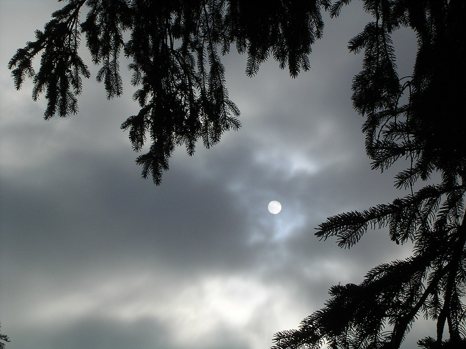
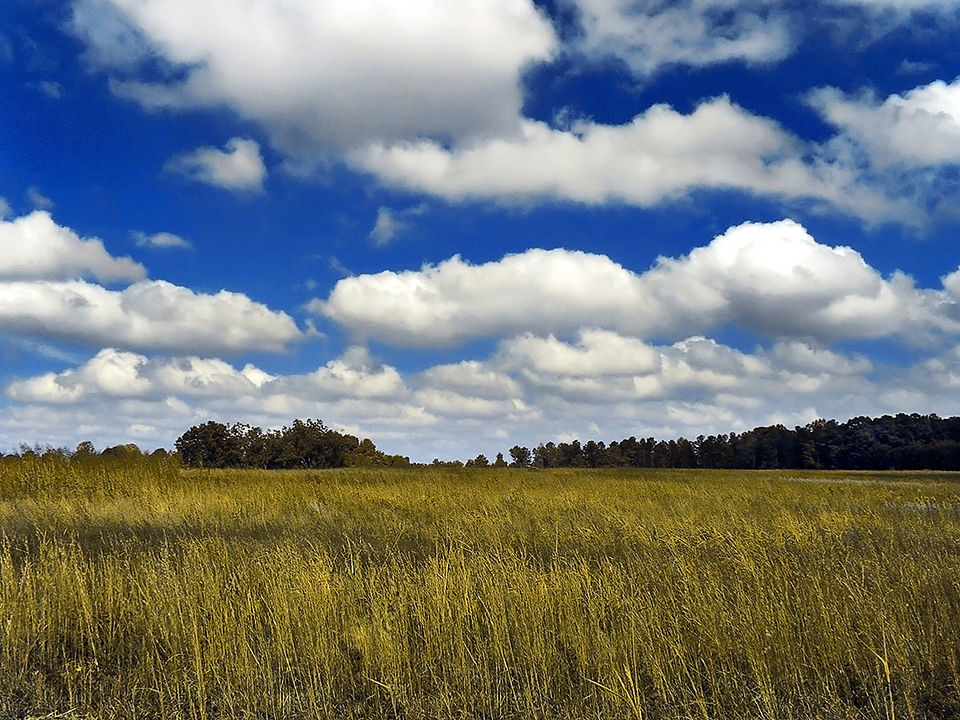

Think about the clouds you have seen. They are not all the same! Sometimes they are white and fluffy, sometimes they are dark and scary, and sometimes they are just small wisps.
Cirrus clouds are thin and wispy. They hang out high in the sky and appear during good weather.

Stratus clouds are flat, grey clouds that sit low in the sky. They often cover the whole sky and may produce light rain.

Cumulus clouds are big, puffy clouds. They usually mean good weather unless they grow really tall and turn into cumulonimbus clouds, which can cause thunderstorms or even tornadoes.